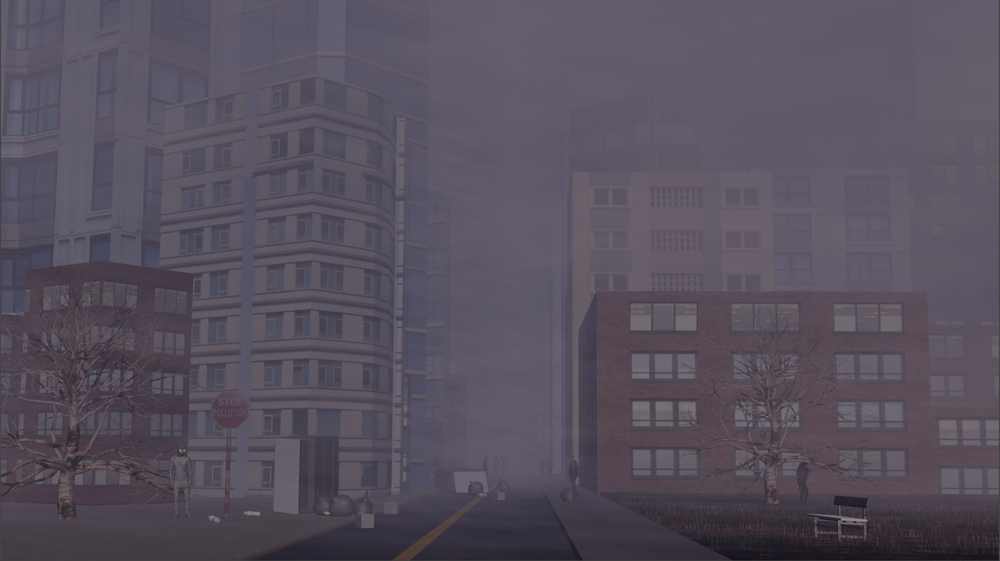
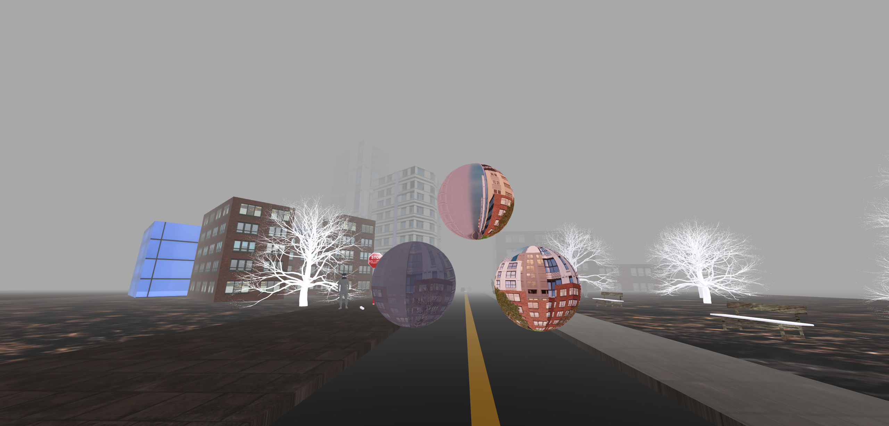
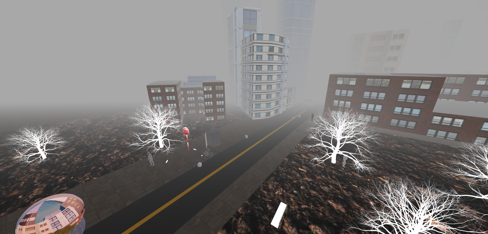
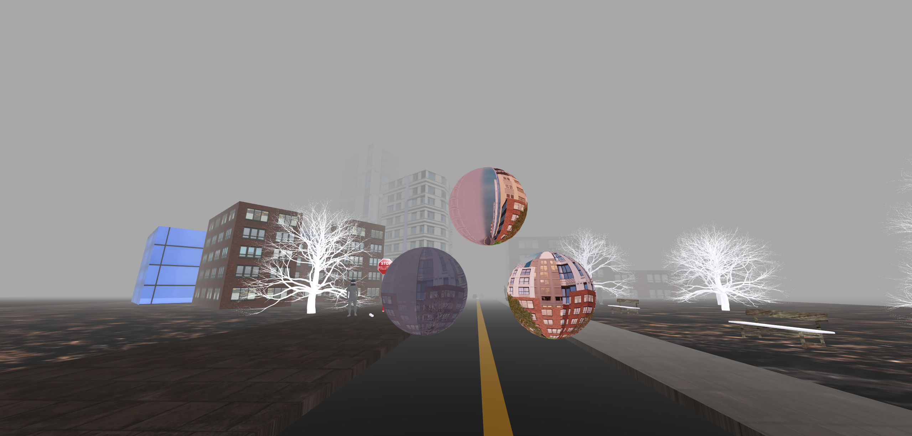
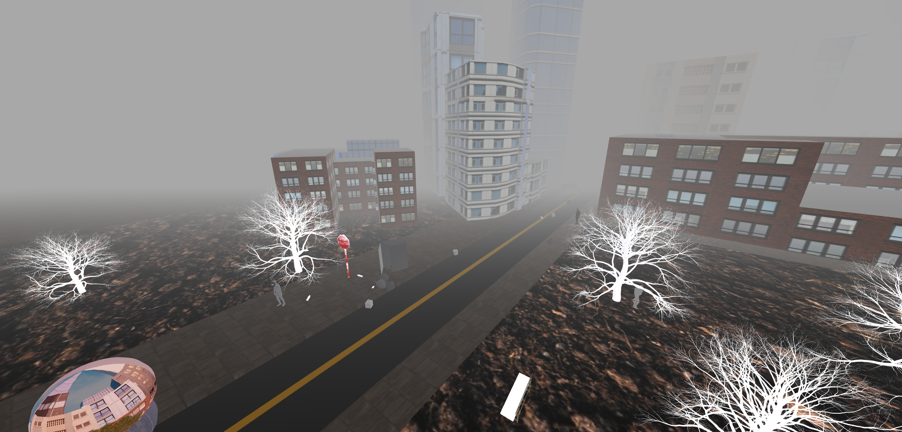
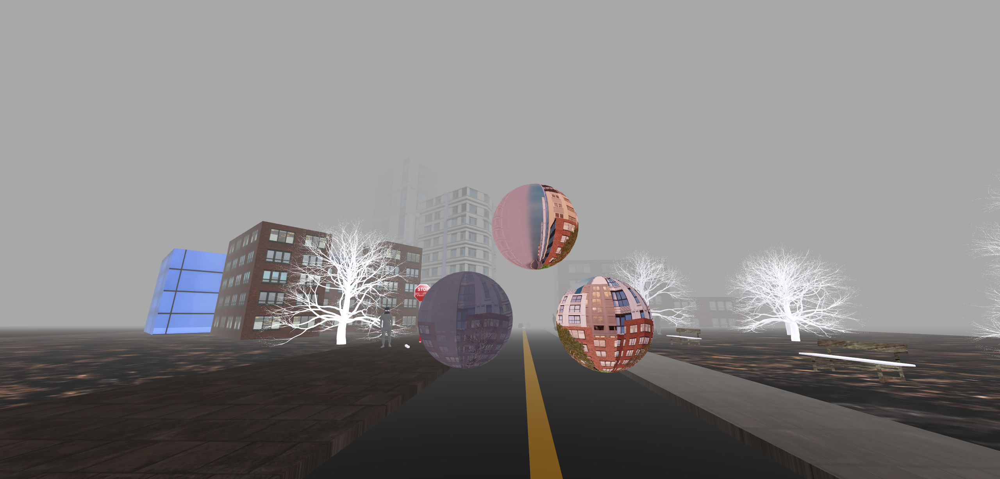
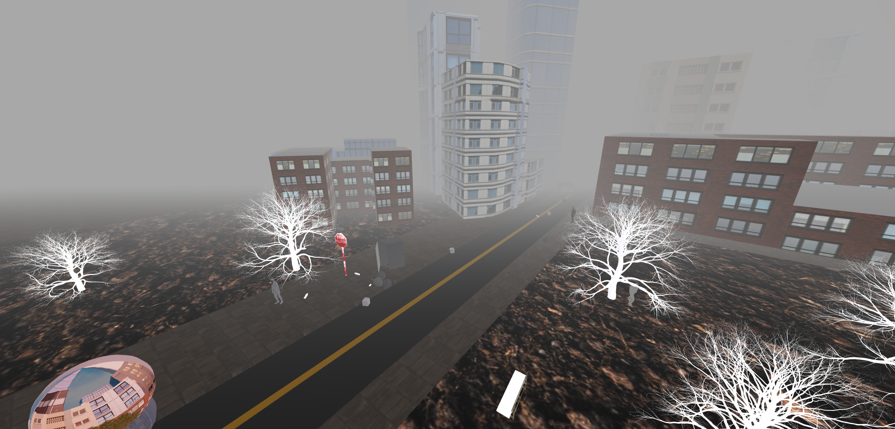

  
 
Jason Lin is an artist and soon to be graduate of San Jose State University, who specializes in digital art. He entered the university wanting to work in the field of art, but was unclear of his goals until he discovered digital media. Since the digital world branches off into a multitude of art styles such as digital paintings, video editing, web development, augmented reality, and much more, this enables an expansion of his knowledge and variance in his artwork, which he’s been able to explore with his time at San Jose State University. A majority of his work consists of graphical edits created in Photoshop and Illustrator, as well as his new found interest in 3D modelling and animation, where he’s created multiple works using Blender. He sees working with digital art as a challenge because of the rate digital technology is advancing, it leads to more opportunities to learn and improve his art skills.
The idea of bringing digital objects to life is a discovery that changed my perception on art. Being able to produce realistic environments, simulating weather, and even animating life through only a screen, is what compels my passion for making 3D art. 3D Modelling enables me to simulate the real world, and occasionally allows me to run wild with my imagination, as I have also created works related to the supernatural theme. As digital technology continues to advance in the future, it allows for an opportunity to further hone my skills, which never gets stale. “Future of Two Worlds” is a 3D rendered environment that was created in Blender, that projects two different scenarios and brings awareness to pollution. The scene is split into two worlds, one engulfed in pollution and the other half is filled with life. The world has been stationed in the same place for so many years and it is the home to us and other species. There will never be another place like this world, in which we call our home, but the question is, do we treat it like our home? Having a home means we maintain and clean it on a regular basis for our own health, which also applies to this planet. My work is meant to portray the consequences of pollution and how it is not too late to prevent the earth from becoming a smog-covered landfill.
 